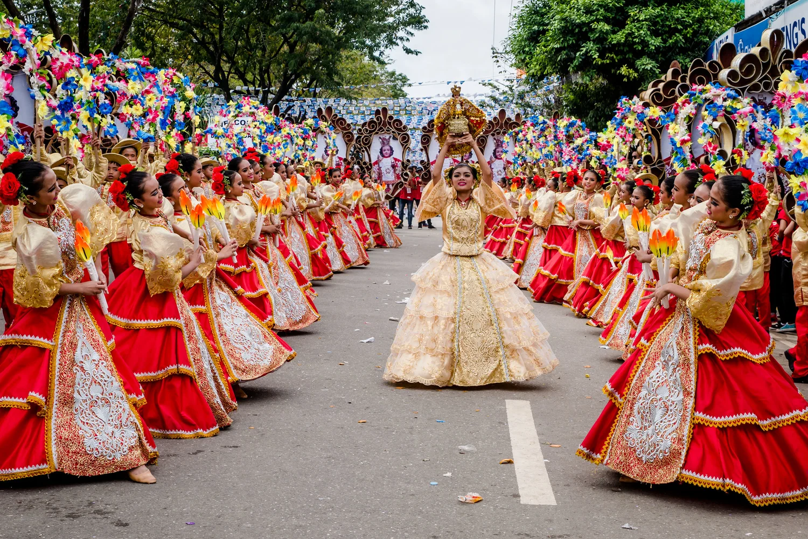
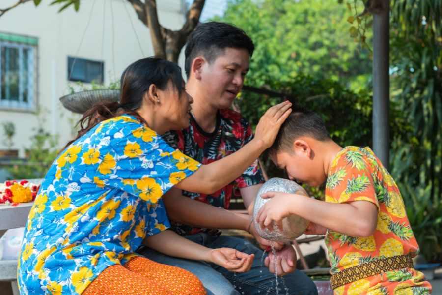

Culture of the Philippines
The Philippines has a rich and diverse culture shaped by centuries of history and a blend of indigenous traditions, Asian influences, and over 300 years of Spanish heritage. Filipinos are widely known for their warm hospitality, strong family values, and deep community spirit. Whether through music, dance, food, art, or festivals, Filipino culture reflects joy, resilience, faith, and a close connection to family and community.

Festivals
Every city celebrates colorful festivals filled with dancing, music, and tradition.

Filipino Food
Adobo, Sinigang, Lechon, and Halo-Halo — some of the world’s most beloved Filipino dishes!

Local Traditions
Strong family ties, hospitality, respect for elders, and the bayanihan spirit.